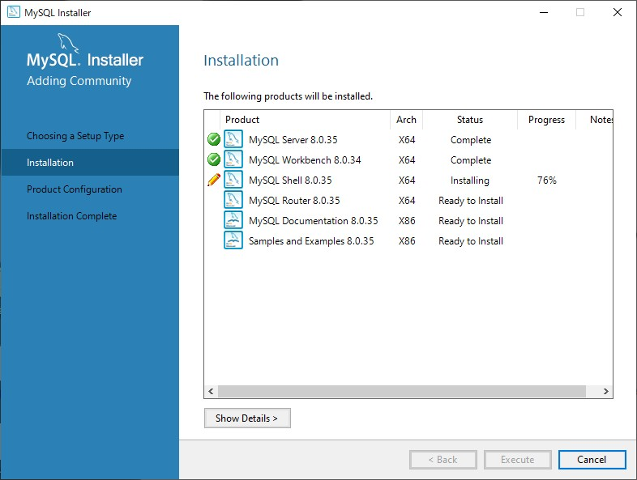
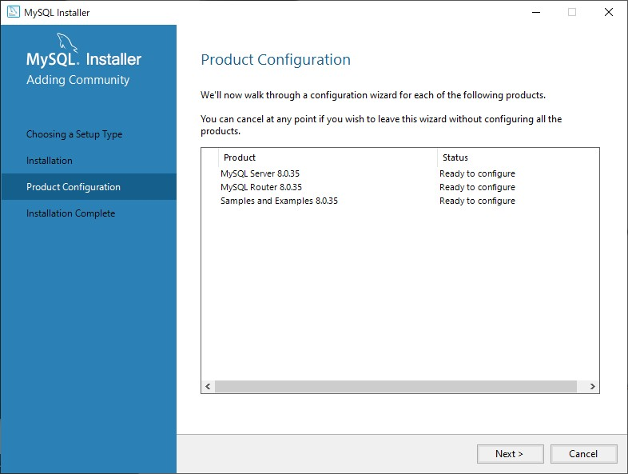
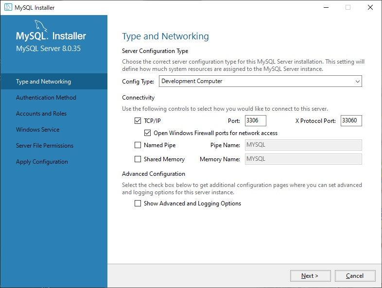

MySQL Workbenchのインストール
ダウンロードフォルダにあるmysql-installer-community-8.0.35.0.msiをクリックし、起動してください。
ユーザーアカウント制御がどうのこうの言ってくるかもしれませんが、大した事聞いてきてないのではいを選択してください。
しばらく待ってるとMySQL Installerが開きます。
Choosing a Setup TypeをFullに切り替えて、Nextをクリックしてください。
そうするとInstallationに進みます。
ここでは先ほど選んだインストールタイプに合わせてインストールするソフトが一覧で表示されます。
下のような表示になれば大丈夫です。Executeをクリックしてください。
もし足りないものがあれば、ひとつ前に戻ってインストールタイプをFullにしてください。
Executeをクリックするとインストールが始まります。
緑色のチェックマークはStatisがComplete、つまりインストールが完了したことを意味しています。
鉛筆マークはインストール中ということです。
もしもインストールが失敗しても、アイコンをクリックすれば再度インストールが実行されたと思います。よく覚えてないので
よっぽどのことがない限り失敗しないので問題ないかと思います。失敗する事例を確認したかったのですが、失敗させるのが難しいので許してください。
完了したらNextをクリックしましょう。先ほどの場所にはCancelがあり、間違えてそれをクリックすると、MySQL Serverがセットアップされずに終わってしまい、悲惨な目に遭います。(1敗)
次にProduct Configurationです。Nextをクリックしましょう。
Type and Networkでは特にこれと言って変更するべき項目はありません。
- Config TypeがDevelopment Computer(開発用コンピュータ)を選択しているか
- 個人的にサーバーを建てている人はポート番号がダブっていないか
これらをしっかり確認しNextを選択してください。
次にAuthentication Methodに移ります。
認証メゾットについて何かしら聞いてきているのは分かりますが、よくわからんので日本語訳したところ、
認証に強力なパスワード暗号化が使えるよ。
MySQL8はSHA256っていうすげー認証方法がつかえるよ。
古いMySQLだと使えないから古いの使ってる人は下を選んでね
とのことだったのでそのままNextをクリックしましょう。
Accounts and Rolesでは、管理者権限を持つRootアカウントのパスワードを決めたり、別のアカウントにロールを追加しアクセスできる情報に制限をかけたりする機能が実装されています。
今回は別のアカウントを作る必要はないのでRootアカウントのパスワードだけ決めます。
忠告しておきますが、Rootアカウントのパスワードを忘れると最悪の場合再インストールする羽目になるので、何が何でも絶対に、パスワードを正しくメモしておいてください。
Javaを用いてeclipseで開発する際に、データベースに接続するためにアカウントのパスワードが要求されます。
覚えやすいパスワードでも構いません。見やすいところにメモしちゃっても大丈夫です。何が何でもパスワードを忘れないでください。
パスワードを2回入力したらNextをクリックしてください。
Apply Configurationまで特に変更することはないのでNext連打してください。
Apply ConfigurationのExecuteをクリックし、Finishを押してください。
MySQL Router ConfigurationもNext押してFinish押してください。
Connect To Serverで先ほどメモしたパスワードを入力し、Checkを押してStatusがConnection succeededになったのを確認しNextを押してください。
設定を通すためにExecuteを押してください。完了したらFinishしてください。
Nectを何回か押すとやっとの思いでInstallation Completeの文字を見ることができます。Finishを押せば実際にMySQLでのデータベース操作が行えます。やったね。
- 人によってはやれMicrosoft.Net FrameworkがないだのやれVisual C++がないだの言われますがインストールされてないと何もできないのでインストールしてきてください
- 学校のパソコンには.Net Frameworkがないうえにインストールに許可が必要なのであきらめてください。
- Microsoft.Net FremeworkのインストーラーはこちらちなみにSelect languageで日本語が選べます
- visualstudioのインストーラはこちらこれらのインストール手順は省きます
- MySQLはインストール先を選ぶことはありませんが、この2つのソフトをインストールするときはディレクトリ名に日本語名が入っていると動作しない可能性があるので、必ずファイルのパスに日本語が含まれていないことを確認してください。
- ちなみにディレクトリとはファイルを入れておく、要するにフォルダの事を意味しています。ファイルのパスとはファイルの住所のことです。エクスプローラーの検索欄の隣にあるボックスをクリックしてみて出てくるやつです。